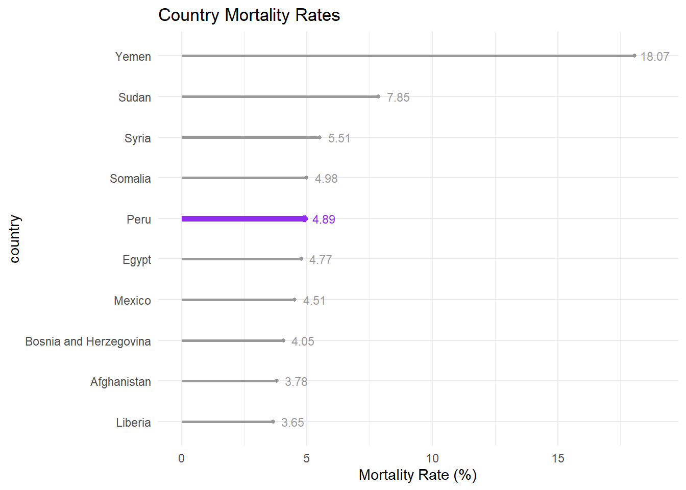

# A tibble: 6 × 7
country tot_cases deaths recovered active_cases tests population
<chr> <dbl> <dbl> <chr> <chr> <dbl> <dbl>
1 USA 104196861 1132935 101,322,779 1,741,147 1159832679 334805269
2 India 44682784 530740 44,150,289 1,755 915265788 1406631776
3 France 39524311 164233 39,264,546 95,532 271490188 65584518
4 Germany 37779833 165711 37,398,100 216,022 122332384 83883596
5 Brazil 36824580 697074 35,919,372 208,134 63776166 215353593
6 Japan 32588442 68399 21,567,425 10,952,618 92144639 125584838
Introduction
This dataset contains reported cases and deaths and other count data from Covid-19 by country/territory. While it doesn’t contain temporal information, the most recent data update is noted to be 2023. (Exact month/day unknown). The data set contains 8 columns and 231 observations, with notable variables as listed below.
Covid-19, aka Coronavirus, is an infectious disease caused by the SARS-CoV-2 virus. Most people infected experience mild to moderate respiratory illness and recover without treatment, but severe cases require medical attention. The elderly or those with underlying medical conditions are more likely to develop severe cases of Covid-19, however it is possible for anyone at any age or health status to develop a severe case.
Known to many, Covid-19 was the pathogenic agent in the Global pandemic of 2020. The notoriety of the disease came from how contageous it came to be, and the number of lives it took. The pandemic globally impacted daily life, economic status, and health status of all countries, and brought to light the roles and dynamics of Public Health measures.
This blog seeks to visualize various aspects of Covid-19’s impact in 2023, focusing on the death counts, population, number of tests taken in the country, and number of cases in reach country/region.
Mortality Visualization
My first impulse was to visualize the mortality in comparison to the number of cases each country had. As there are many countries in the data set, I’ve limited this to the top 10 countries with the highest number of deaths.
#data for top deathscovid_top10deaths <- covid_worldwide |>arrange(desc(deaths)) |>slice(1:10) |>mutate(country =fct_reorder(country, desc(deaths))) |>mutate(deathcases_prop = (deaths / tot_cases)*100 ) |>#calculate mortality Ratemutate(deathcases_prop =round(deathcases_prop, 2))# data for labeling what % of total cases the death makes up forcovid_top10deaths_labs <- covid_top10deaths |>select(country, deathcases_prop, deaths)ggplot(data = covid_top10deaths, aes(x=country, y=deaths, fill = deathcases_prop)) +geom_bar(stat ="identity") +geom_text(data= covid_top10deaths_labs, aes(label = deathcases_prop), nudge_y =25000) +labs(title ="Top 10 Countries With the Largest Covid-19 Death Count",caption ="Black numbers represent the % of total Covid-19 cases that led to death.",x ="Mortality Rate (%)") +scale_fill_viridis_c() +theme_minimal()
In this graph, we first see the top 10 countries that had the highest counts of death from Covid-19. Also visualized is the mortality rate (% of total Covid-19 cases that led to death), also visualized in color, to better capture the impact of the disease in each country. As an example interpretation, we see that Brazil has roughly 700,000 deaths from Covid-19, and that 1.89% of their total covid cases led to death; a mortality rate of roughly 2 deaths per 100 Covid cases. <
While the USA has the most deaths from Covid, which suggests that Covid-19 impacted the US the most, we also need to take into account the mortality rate to consider deaths in comparison to total Covid cases. Taking the mortality rate into consideration, we now see that Peru, highlighted in yellow with a reported mortality rate of 4.89%, seems to have been hit the hardest by Covid-19 on this graph. It brings to light how the ratio of deaths to instances of disease plays a larger role in determining disease impact on a country’s population. But, this conclusion begs the question: are there more countries like Peru that aren’t visualized here?
Visualizing Global Top Mortality Rates Lets visualize the top 10 countries with the highest mortality rates:
mortality_top10 <- covid_worldwide |>filter(!is.na(deaths)) |>filter(!is.na(population)) |>filter(tot_cases >=3000) |>mutate(deathcases_prop = (deaths / tot_cases)*100 ) |>#calculate mortality Ratemutate(deathcases_prop =round(deathcases_prop, 2))|>arrange(desc(deathcases_prop)) |>slice(1:10) |>mutate(YesPeru =if_else(country =="Peru", # Indicator variable to help identify Peru in the graphtrue ="of_interest",false ="other")) |>mutate(country =fct_reorder(country, deathcases_prop))# Notes to data filtering: ## removed any countries with NA for tot_cases, deaths, or population## total cases minimum was placed as not to produce skewed data. ## ^^(countries with really small total cases may have less sensitive tracking data for # cases and # deaths)## ^ This conclusion was reached by investigating cases versus population count and comparing numbers to countries with geographic proximity.ggplot(data = mortality_top10, aes(x= deathcases_prop, y= country,colour = YesPeru, size = YesPeru)) +geom_point(show.legend =FALSE) +geom_segment(aes(yend = country, x =0, xend = deathcases_prop), show.legend =FALSE) +theme_minimal() +scale_colour_manual(values =c("purple2", "grey60")) +scale_size_manual(values =c(2,1)) +geom_text(data= mortality_top10, aes(label = deathcases_prop), nudge_x =0.8, size =3, show.legend =FALSE) +labs(title ="Country Mortality Rates", x ="Mortality Rate (%)")
Warning: Using `size` aesthetic for lines was deprecated in ggplot2 3.4.0.
ℹ Please use `linewidth` instead.

This lollipop plot gives a better understanding of the countries most affected by Covid-19 (in a mortality rate lens). Highlighted in purple is the country we viewed earlier, Peru, with its mortality rate of 4.89%. While Peru’s mortality rate led within the lens of the top 10 countries with the most deaths, it now places 5th when viewing the data from just the lens of mortality rate.
With an almost entire shift in leaderboard here, we see that the number of deaths from covid provides a much different view of disease impact compared to mortality rate. Here, we see that Yemen, Sudan, and Syria suffered the most casualties from those who contracted Covid-19, while the leaders earlier like Britain, the US, and Brazil don’t even make the leaderboard here. This suggests that healthcare systems may have struggled to support those who fell ill, since a greater proportion of those who contracted Covid-19 in these countries passed away.
But what of the population as a whole? How does considering the country’s population size alter our understanding of Covid-19’s impact?
Conclusions:
Future Directions
If given more time to investigate this data, I’d begin utilizing the populations of each country. Something my previous graphs don’t take into consideration is population size, so I’d like to visualize in a globe heat map the proportion of each country’s population that contracted Covid-19.
Flaws
While the data was almost fully complete, there were occasional NA values. For the most part, I don’t think it greatly affected the data visualization, as countries with missing or suspiciously low counts may have unreliable Covid reporting systems in place to represent their population accurately. (There could be other reasons for odd counts or NAs however, this assumption could be biased base on my currently limited knowledge on the strength of healthcare and public health systems in place globally.)
Connection to Classwork
Touching on Data 234 coursework, I utilized labels to add more context to my deaths count and mortality bar graph, as well as selected a colorblind friendly color pallet from viridis. The scale_fill_viridis_c() option was chosen, as the _c() relates to a continuous color scale, which I felt suited the data better than a binned color scale would (_b() option). The utilization of geom_bar() with a stat = “identity” application also references the use of statistical transformations in our Grammar of Graphics coursework. The lollipop plot with Mexico highlighted is also from coursework, displaying how you can use manual commands to further customize a graph.
Sources/Citations
Dataset: From Kaggle, titled ‘Covid Cases and Deaths Worldwide’ [Reported Cases and Deaths by Country or Territory], Updated 3 years ago, posted by Mrityunjay pathak.
Supplementary Covid-19 information: Pulled from the data description in Kaggle, same source/link as above ^. Lightly filled with personal experience as well.
Image Credit: Image of a Covid-19 particle was pulled from online, and is owned by Fine Art America. Link to image is here: https://sl.bing.net/ehW5Wpt8EBo